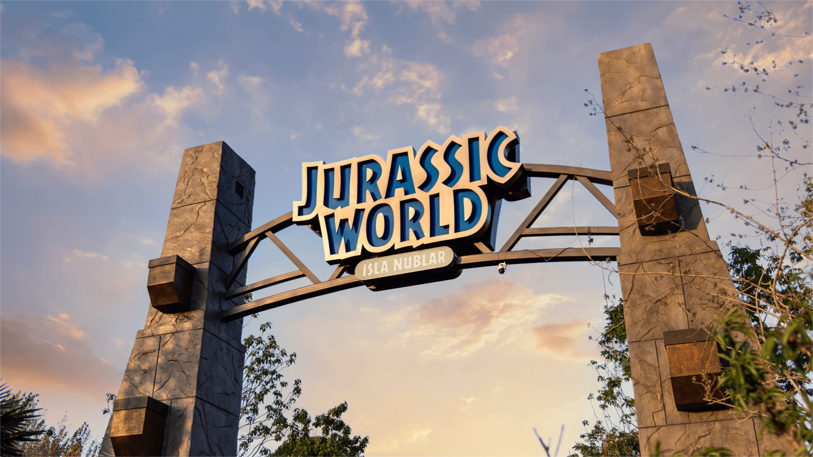
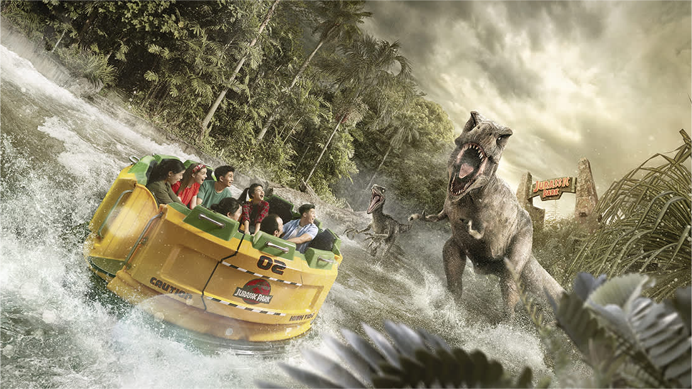
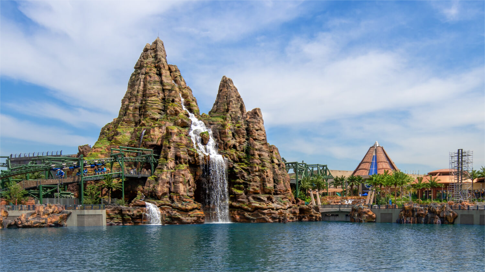
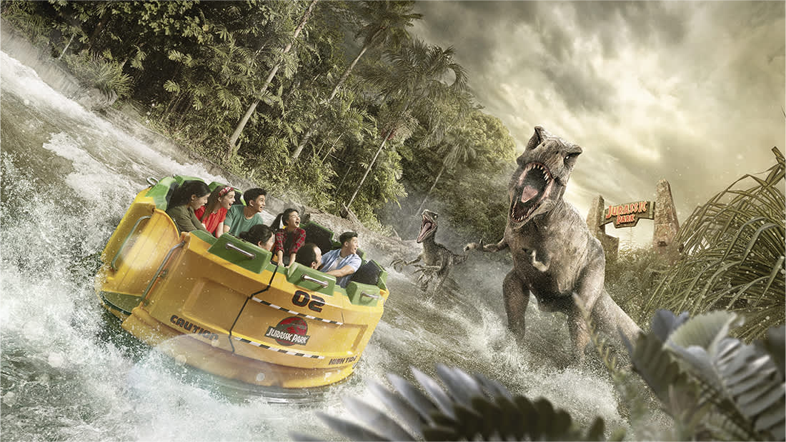
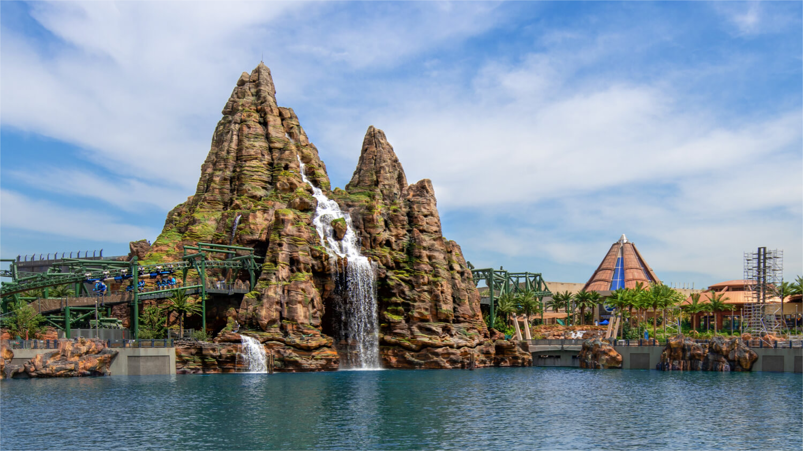
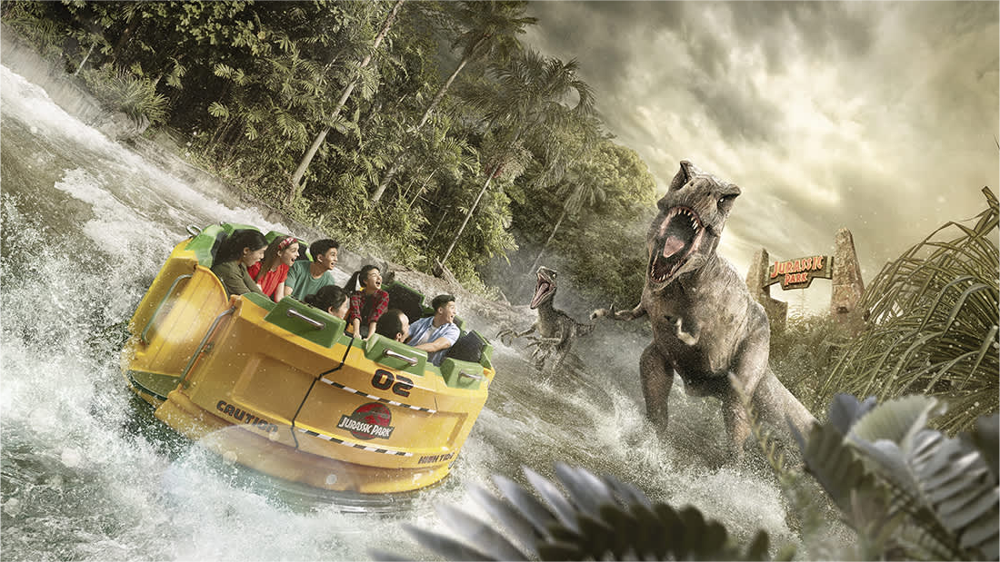
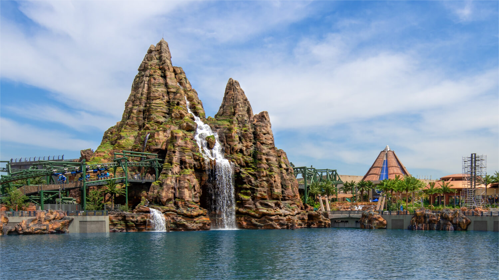

NEWS
The Jurassic era from 65 million years ago is brought back to life once more. As you step through that iconic gateway into the Jurassic world, you'll witness all of John Hammond's imaginings of the Jurassic era come to fruition! Lush tropical rainforests teeming with the unknown, majestic waterfalls, and mysterious lagoons, and of course... the prehistoric dinosaurs brought back to "life"! Isla Nublar, the Jurassic World, is a place full of wonders. Do you have the courage to venture into it and embark on an exhilarating adventure?

 





<
>
Before the publication of the "Jurassic Park" novel, four film companies participated in bidding for the adaptation rights. These included Warner Bros. with director Tim Burton, Columbia Pictures with "Superman" director Richard Donner, 20th Century Fox with filmmaker Joe Dante, and Universal Pictures with Spielberg.
Ultimately, Universal and Spielberg emerged victorious.
One theory suggests that Universal's success in acquiring the rights to "Jurassic Park" stemmed from its ownership of the theme park "Universal Studios." This IP not only allowed Universal to adapt the story into a film but also to develop it into amusement park attractions, maximizing and sustaining the IP's value. Universal's ownership of its own theme park also aligned perfectly with Michael Crichton's narrative, which critiqued a "dark version of Walt Disney" — a capitalist who transcends the creator and uses genetic technology to resurrect dinosaurs, placing them in a theme park for profit. This decision proved to be fruitful, as Jurassic Park annually attracted hundreds of thousands of visitors to Universal Studios, becoming an iconic theme park attraction.
Ultimately, Universal and Spielberg emerged victorious.
One theory suggests that Universal's success in acquiring the rights to "Jurassic Park" stemmed from its ownership of the theme park "Universal Studios." This IP not only allowed Universal to adapt the story into a film but also to develop it into amusement park attractions, maximizing and sustaining the IP's value. Universal's ownership of its own theme park also aligned perfectly with Michael Crichton's narrative, which critiqued a "dark version of Walt Disney" — a capitalist who transcends the creator and uses genetic technology to resurrect dinosaurs, placing them in a theme park for profit. This decision proved to be fruitful, as Jurassic Park annually attracted hundreds of thousands of visitors to Universal Studios, becoming an iconic theme park attraction.